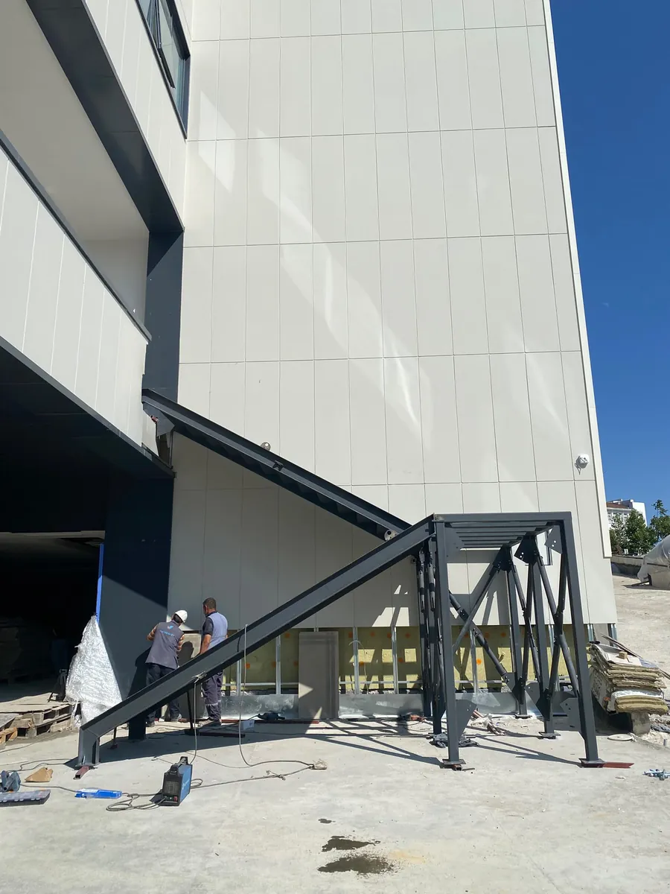
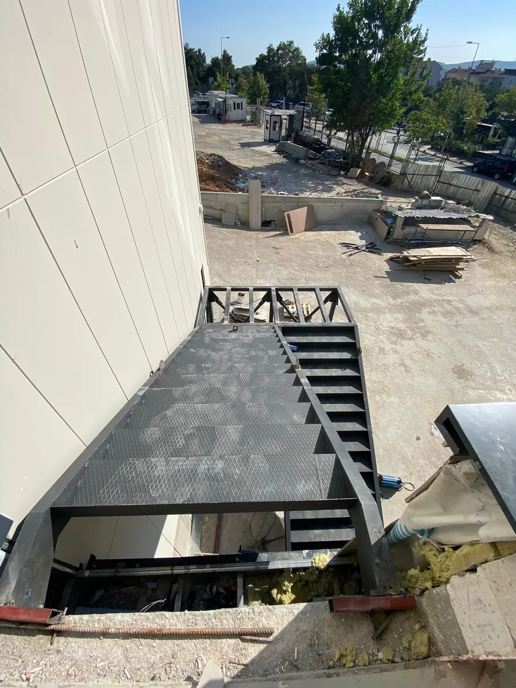
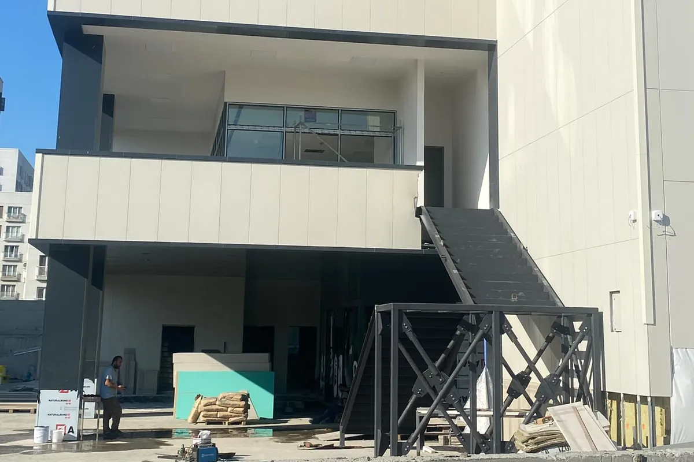
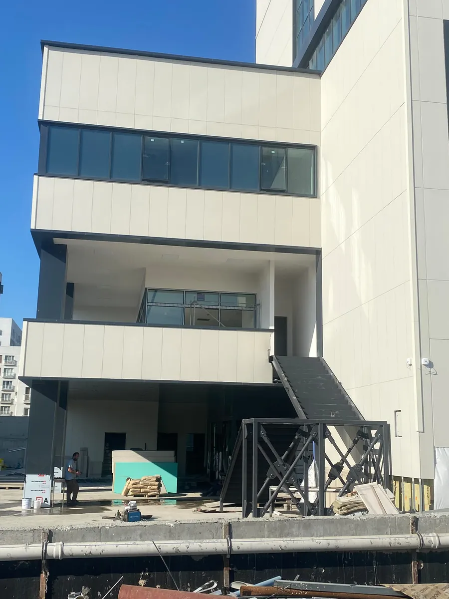
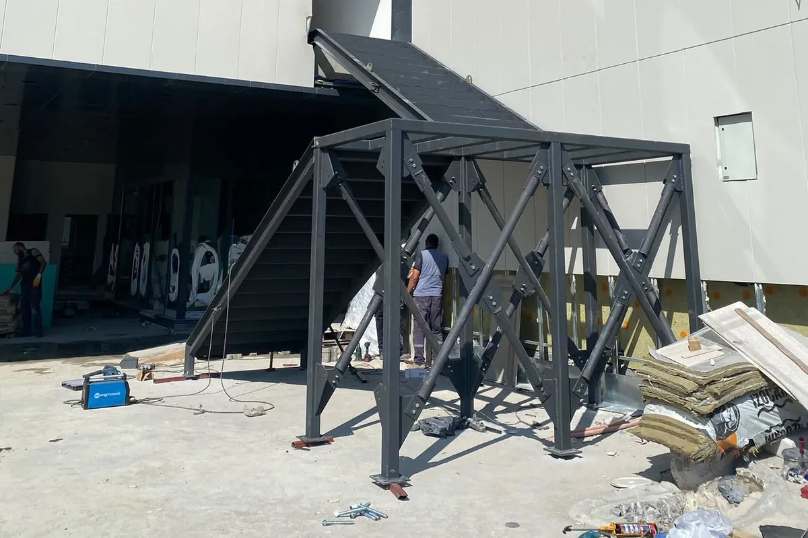
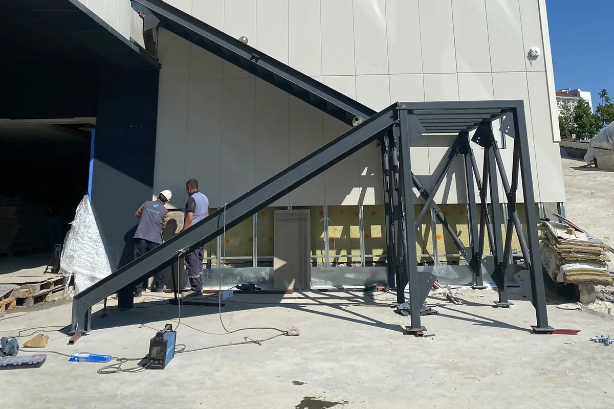

Dış cephe kaçış merdivenleri
Yangın
merdiveni.
Hastane, ofis ve siteler için dış cephe kaçış merdivenleri. Projeden sahaya, yönetmeliğe uygun.

Ne yapıyoruz
Kaçış yolu,
çelikten.
Yangın merdiveni, binada bir şey ters gittiğinde insanların güvenle dışarı çıkacağı yoldur. Mevcut binaya sonradan eklenen ya da yeni projede baştan planlanan dış cephe kaçış merdivenlerini projelendiriyor, atölyemizde üretiyor ve sahada kuruyoruz. Hastane, okul, ofis, otel, fabrika ve konut siteleri için.

Projeden teslime
Dört adımda
kaçış merdiveni.
Ölçüyü alan, projeyi çizen ve merdiveni kuran aynı ekip. Binanın kullanımı mümkün olduğunca aksamadan çalışırız.
- 01
Keşif ve proje
Binayı yerinde inceliyor; kat yüksekliklerini, çıkış kapılarını ve cephenin taşıma durumunu ölçüyoruz. Kaçış yolunu, kol ve sahanlık ölçülerini Binaların Yangından Korunması Hakkında Yönetmelik’e göre planlıyor, statik hesabıyla birlikte onaya hazır proje dosyasını hazırlıyoruz.
- Yerinde ölçü
- Statik hesap
- Onay dosyası

- 02
Taşıyıcı ve basamak
Kollar çelik profil kirişlere, sahanlıklar çaprazlı çelik kulelere ve binaya ankrajla bağlanır. Basamak ve sahanlıklarda yağmurda, karda ve gece de kaymayan ızgara ya da baklava desenli sac kullanırız; korkuluklar kaçış sırasında tutunacak kadar sağlam ve süreklidir.
- Çelik profil
- Izgara · baklava sac
- Sürekli korkuluk

- 03
Kaplama ve dayanım
Dış merdiven yıllarca açık havada durur. Çeliği korozyona karşı sıcak daldırma galvaniz ya da astar ve son kat boya ile koruyoruz; renk cepheye göre seçilir. Bağlantıları ve boyayı periyodik olarak kontrol etmenizi öneriyor, isterseniz bakımını da üstleniyoruz.
- Galvaniz
- Astar + boya
- Bakım

- 04
Montaj ve teslim
Parçalar atölyede kesilip kaynaklanır, sahaya montaja hazır gelir. Kendi ekibimizle kurar, teslimden önce bağlantıları, korkulukları ve kapı çıkışlarını birlikte kontrol ederiz.
- Atölye üretimi
- Kendi ekibimiz
- Son kontrol

Binanızı
görelim.
Binanın adresini, kat sayısını ve varsa projesini gönderin; keşif için arayalım.
Teklif formuna git